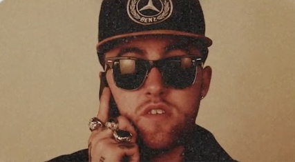
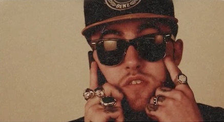
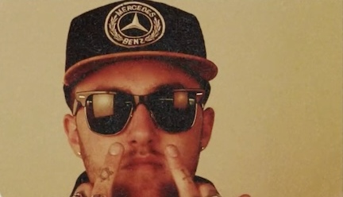

BIOGRAFIA
Menu
Galeria
Discografia
Premios
Malcolm James McCormick (19 de enero de 1992 - 7 de septiembre de 2018), conocido profesionalmente como Mac Miller, fue un rapero y cantante estadounidense. También fue un conocido productor de discos bajo el seudónimo de Larry Fisherman.
Durante su infancia llegó a adoptar un gusto personal por el mundo de la música, así como también un aprendizaje en instrumentos como la guitarra, el bajo, el piano y la batería. Por otro lado, Miller también era alabado por su forma de ser tan relajada y despreocupada, un detalle que le llegó a dar el apodo de Easy Mac en la escuela, su primer nombre artístico.
En su primer año en la escuela Taylor Allderdice, Mac Miller decidió centrarse en su carrera en el Hip Hop y dejar de lado los estudios, aunque no se lo tomaba muy seriamente.
Antes de su carrera en solitario, formó parte del grupo de rap The Ill Spoken con su colega rapero de Pittsburgh, Beedie. Al cumplir los 18 años, firmó con Rostrum Records y lanzó su debut mixtape, titulada K.I.D.S. en agosto de 2010.
 |
 |
 |
|
A principios de 2010, Miller firmó un contrato con la discográfica indie de Pittsburgh, Rostrum Records.
El 29 de marzo de 2011, lanzó un EP llamado On And On And Beyond, que cuenta con seis canciones y fue producida por Rostrum Records, con quien también ha grabado multitud de vídeos de sus temas
En 2011 saca un nuevo EP titulado Best Day Ever. Su álbum debut de estudio titulado Blue Slide Park fue sacado el 8 de noviembre del 2011.
Posteriormente, comenzó a grabar su álbum de debut, Blue Slide Park, y lo lanzó el 8 de noviembre de 2011. El álbum debutó en el número uno de la lista Billboard 200 de EE. UU., Convirtiéndose en el primer álbum debut distribuido independiente en encabezar la lista desde el álbum de Dogg Food "Tha Dogg Pound" de 1995.
A principios de 2013, Miller lanzó REMember Music, su propio sello discográfico, que lleva el nombre de un amigo que murió. El segundo álbum de Miller, Watching Movies with the Sound Off, fue lanzado el 18 de junio de 2013. En enero de 2014, Miller anunció que ya no estaba firmado para Rostrum Records. En octubre de 2014, se informó que Miller firmó un contrato discográfico para él y su sello REMember, con Warner Bros. Records
Miller murió de una aparente sobredosis de drogas el 7 de septiembre de 2018.
Descargar biografia